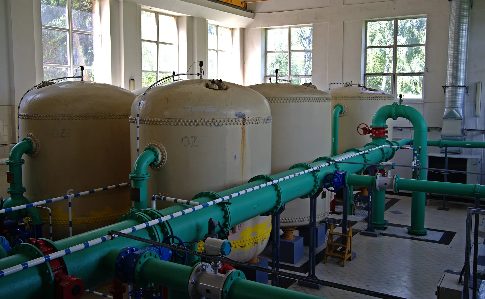
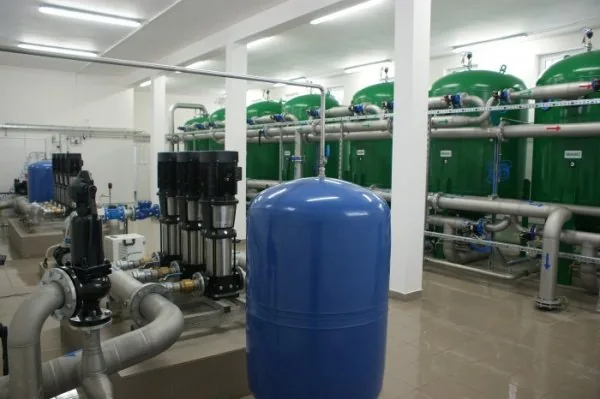
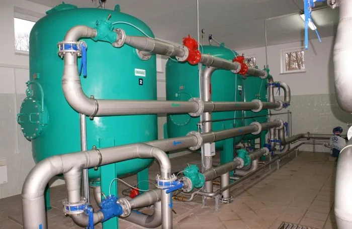
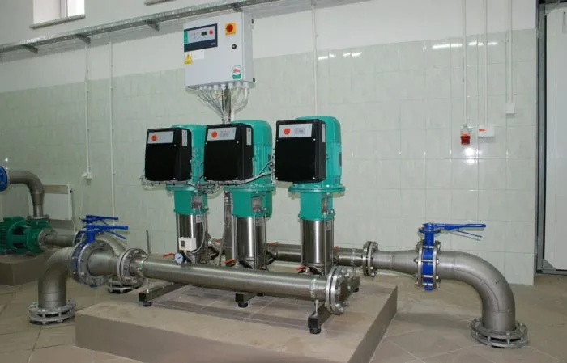

Stacje uzdatniania wody: projekt i nadzór
Projektujemy stacje uzdatniania wody, sieci wodociągowe i kanalizacyjne oraz przepompownie. Prowadzimy nadzór i rozruch. Ostróda i północno-wschodnia Polska.
Zapytaj o projekt- Studnia
- NapowietrzanieAeracja
- Filtracja
- Zbiornik
- Sieć
Cała droga wody, od studni do kranu
Dokumentacja i nadzór dla gmin, zakładów komunalnych, zakładów przemysłowych i inwestorów prywatnych.
Projekty stacji uzdatniania wody
Nowe stacje, modernizacje i stacje kontenerowe, dla celów komunalnych i przemysłowych.
Sieci wodociągowe i kanalizacyjne
Projekty sieci rozdzielczych i przyłączy.
Przepompownie i oczyszczalnie ścieków
Projekty przepompowni ścieków i oczyszczalni.
Instalacje wewnętrzne
Instalacje wodno-kanalizacyjne w budynkach i halach.
Nadzór i rozruch technologiczny
Nadzór nad realizacją, uruchomienie stacji i układów sterowania.
Doradztwo techniczne
Studnie i pompy głębinowe, zestawy hydroforowe, złoża filtracyjne, zmiękczanie wody, odwrócona osmoza.

Wybrane realizacje
Stacje zbudowane i zmodernizowane przez INNTECH (wcześniej INNTECH s.c.). Parametry z opisów realizacji.
- 2006
Kałduny, gm. Iława
Modernizacja stacji uzdatniania wody i wymiana pomp głębinowych
Uzdatnianie dwustopniowe, filtry ciśnieniowe fi 1800, powiadamianie o awariach przez GSM
- 2007
KOZDRYK sp. z o.o.
Modernizacja stacji, wymiana czterech pomp głębinowych i podłączenie do sieci hydrantowej
Uzdatnianie jednostopniowe, filtry ciśnieniowe fi 1600, hydrofory napowietrzające

z galerii realizacjiSkandawa
Stacja uzdatniania wody - zdjęcie z galerii realizacji
Filtry ciśnieniowe, orurowanie ze stali nierdzewnej, zestaw pompowy
- 2007
Gulb, gm. Iława
Modernizacja stacji uzdatniania wody
Uzdatnianie jednostopniowe, filtry fi 1400, stacja bezobsługowa ze sterownikiem
- 2006
Siemiany, gm. Iława
Kontenerowa stacja uzdatniania wody, nowa studnia głębinowa i osadnik popłuczyn
Uzdatnianie dwustopniowe, filtry fi 1600, płukanie złóż na zaworach pneumatycznych
- 2003
Grabowiec
Kontenerowa stacja uzdatniania wody w gospodarstwie rolnym
Uzdatnianie dwustopniowe, filtry fi 1200, instalacja podnoszenia ciśnienia
- 2005
Cegielnia Łajsy, Unieszewo
Budowa stacji, nowa studnia głębinowa i dwukomorowy osadnik popłuczyn
Uzdatnianie dwustopniowe, filtry fi 1400, stacja bezobsługowa
- 2006
Ameryka, gm. Olsztynek
Modernizacja stacji uzdatniania wody i wymiana pomp głębinowych
Uzdatnianie jednostopniowe, filtry fi 1000, powiadamianie o awariach przez GSM
- 2005
Szymonowo, gm. Morąg
Automatyczna stacja uzdatniania wody w ośrodku szkolno-wychowawczym
Uzdatnianie dwustopniowe, filtry fi 600 z głowicami automatycznymi
Także: Szymonowo gm. Morąg, Pawłowo, Wigwałd, Świerkocin i Witramowo gm. Olsztynek, Kroplewo, Ostrowin, Zawady Małe i Girłoża gm. Ostróda, Stare Jabłonki, Ukta, Nowa Kaletka, Mierki, Klekotki, Guzowy Piec, Nowy Kawkow, Najdymowo oraz stacje i studnie dla domów jednorodzinnych i wielorodzinnych.
Czysta woda bez chemii na złożach
Technologia opracowana w INNTECH daje bardzo dobre wyniki uzdatniania w krótkim czasie, bez aktywowania złóż środkami chemicznymi.
- Żelazo i manganw uzdatnionej wodzie często poniżej granicy wykrywalności
- Amoniakskutecznie usuwany, a coraz częściej pojawia się w wodach podziemnych
- Automatykastacje bezobsługowe ze sterownikiem i powiadamianiem eksploatatora o awarii przez GSM

Od studni głębinowych do projektów
- 1996Początek INNTECH: budowa studni głębinowych.
- 1998Uzdatnianie wody, potem budowa i modernizacja stacji komunalnych i przemysłowych, głównie w północno-wschodniej Polsce.
- 2022Nowa forma działalności: GRZEGORZ KOWALEWSKI INNTECH Projektowanie i Nadzory, Ostróda.
Z usług firmy korzystały gminy, zakłady przemysłowe i klienci indywidualni. Doświadczenie z budowy i rozruchu stacji jest dziś podstawą projektów i nadzorów.
Porozmawiajmy o Państwa inwestycji
Proszę opisać obiekt i zakres. Odpowiemy z propozycją dalszych kroków.
501 619 170 biuro@inntech.com.pl GRZEGORZ KOWALEWSKI INNTECH PROJEKTOWANIE I NADZORYul. Racławicka 5/51, 14-100 Ostróda
NIP 741-185-38-83, REGON 280391609